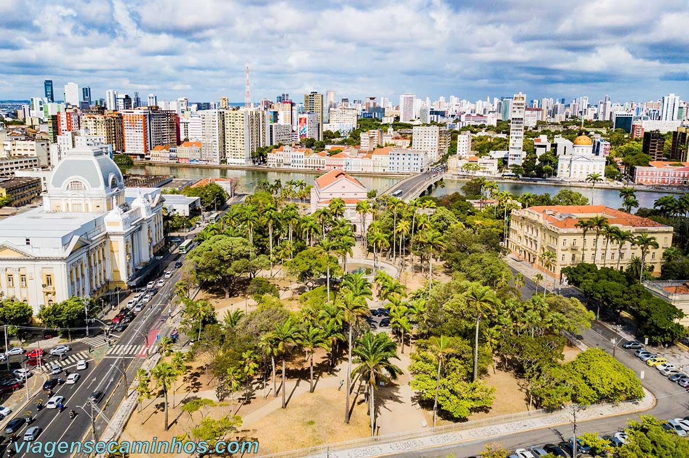

Praça da República
Localizada na Ilha de Antônio Vaz, entre os rios Capibaribe e Beberibe, a Praça da República é uma das mais importantes de Recife. No seu entorno estão edificados: O Palácio do Campo das Princesas (sede do governo estadual); O Teatro de Santa Isabel; O Palácio da Justiça e o Liceu de Artes e Ofícios de Pernambuco.
Há também vários monumentos na praça e entre as muitas árvores, destaca-se o centenário baobá.
